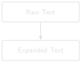
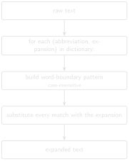

# code/chapter_02/expand_abbreviations.py
ABBREVIATIONS = {
"BHA": "bottom hole assembly",
"WOB": "weight on bit",
"RPM": "revolutions per minute",
"ROP": "rate of penetration",
"MD": "measured depth",
"TVD": "true vertical depth",
"SPP": "stand pipe pressure",
"GPM": "gallons per minute",
"DLS": "dogleg severity",
"MWD": "measurement while drilling",
"NMDC": "non-magnetic drill collar",
"UBHO": "universal bottom hole orientation sub",
"NPT": "non-productive time",
"ECD": "equivalent circulating density",
"MW": "mud weight",
"DFS": "days from spud",
"DOL": "days on location",
"PDC": "polycrystalline diamond compact",
}2 Cleaning Operational Text

Progress ██░░░░░░░░░░ 2 / 12 · Estimated time: 30–45 min · Difficulty: 🟢 Beginner
2.1 Learning objectives
By the end of this chapter, you will be able to:
- Explain why oilfield shorthand breaks naive text search and NLP.
- Build a dictionary-based abbreviation expander that respects word boundaries so it doesn’t corrupt unrelated text.
- Apply the expander across every
.txtfile produced in Chapter 1.
2.2 Operational Problem
Mike, the completions engineer, wants next chapter’s search tool to answer: “Show me every report that mentions the bottom hole assembly.” Will it find report #38? Open the .txt file you extracted from it in Chapter 1 and check: the report never once writes “bottom hole assembly.” It writes BHA — twenty-one times. A search tool that only knows the literal words you typed will come back empty, on a report that was exactly the one you needed.
2.3 Why keyword search fails
Question: “Show me every report that mentions the bottom hole assembly.”
Keyword search for “bottom hole assembly” finds nothing in report #38, because the report never uses that phrase. Instead it says BHA — the same equipment, different word. A computer matching text literally has no way to know these mean the same thing. Report #38 also talks about WOB, MWD, SPP, and a dozen other abbreviations a keyword search would need to be told about, one by one, before it could ever find them.
Before we can search, summarise, or hand this text to a language model, we need to expand it into language that means the same thing to a human and to a machine. That’s the whole job of this chapter.
2.4 Example DDR extract
NoteReal excerpt — report #38, showing both patterns
PJSM, pre job safety meeting. <- self-expanded by source
...
Pick up Curve assembly 2, BHA 21, Reed Hycalog <- BHA never expanded
SKC613M-01C Trip in hole to 5,200'
...
WOB 20 TO 35k, Rotary 50, Torque 6,500, SPP <- WOB, SPP never expanded
3200-3400 GPM 560, DIFF 200-300psi2.5 Theory
An abbreviation expander is just a dictionary lookup — {"BHA": "bottom hole assembly", "WOB": "weight on bit", ...} — but two details make or break it:
- Word boundaries.
str.replace("MD", ...)will happily mangle a word that merely contains “MD” as a substring. Match on whole words using regex\b...\b, not raw substring replacement. - Case. DDRs mix cases inconsistently — this archive’s headers are often all-caps while narrative text is mixed-case — so expansion needs to be case-insensitive without forcing the rest of the sentence to change case.
TipEngineering Translation: Dictionary
A Python dictionary is an equipment lookup table: you give it a tag ("BHA") and it gives you back what that tag means ("bottom hole assembly") — the same way a lookup table on the rig floor maps a short code stamped on a piece of equipment to its full specification.
This is deliberately not a machine-learning problem. A few dozen well-chosen abbreviations, expanded correctly, solve most of the readability problem — and unlike a model, a dictionary is auditable: you can list every expansion it will ever make.

2.6 Implementation
2.6.1 Step 1: build the lookup table
2.7 What problem are we solving?
Give the computer the same knowledge a drilling engineer already carries in their head: what each abbreviation stands for.
2.8 Inputs
- A hand-built list of oilfield abbreviations and their full-text expansions, drawn from what actually appears in this archive.
2.9 Expected Output
A Python dictionary — no output printed yet, just a lookup table in memory, ready for the next step to use.
2.10 What just happened?
You wrote down, once, what every abbreviation in this archive means. This list is the entire “knowledge” the expander needs — no training, no model, just a table you can read top to bottom and check by eye.
2.10.1 Step 2: expand every abbreviation safely
2.11 What problem are we solving?
Turn BHA into bottom hole assembly everywhere it appears as its own word — without also mangling words that merely happen to contain those same letters.
2.12 Inputs
- Raw report text (a Python string).
- The
ABBREVIATIONSlookup table from Step 1.
2.13 Expected Output
The same text, with every whole-word abbreviation replaced by its expansion — for example, Pick up Curve assembly 2, BHA 21 becomes Pick up Curve assembly 2, bottom hole assembly 21.
import re
def expand_text(text: str, abbreviations: dict[str, str] = ABBREVIATIONS) -> str:
for abbr, expansion in abbreviations.items():
pattern = r"\b" + re.escape(abbr) + r"\b"
text = re.sub(pattern, expansion, text, flags=re.IGNORECASE)
return text2.14 What just happened?
For every entry in the lookup table, this checks the text for that exact word — not just those letters anywhere, but that whole word on its own — and swaps in the full expansion, regardless of whether it was typed in capitals or lowercase.
TipEngineering Translation: Word boundary matching
\b...\b is a stricter kind of find-and-replace: instead of “contains these letters anywhere,” it means “matches this exact word, with a space or punctuation on either side.” That’s the difference between correctly expanding the word MD and accidentally mangling it inside an unrelated word that merely contains those two letters.
2.14.1 Step 3: run it across the whole archive
2.15 What problem are we solving?
Apply the expander to every report at once, not just one file at a time.
2.16 Inputs
- The folder of
.txtfiles Chapter 1 produced:datasets/ddr_text/.
2.17 Expected Output
A new folder, datasets/ddr_text_expanded/, with one expanded .txt file per input file, same filenames.
python code/chapter_02/expand_abbreviations.py \
--in-dir datasets/ddr_text --out-dir datasets/ddr_text_expanded2.18 What just happened?
The script read every .txt file Chapter 1 produced, ran each one through expand_text, and saved the result under the same filename in a new folder — so you can always find the expanded version of a report by matching its name against the original.
2.19 Production Reality
This chapter’s dictionary covers the abbreviations that actually appear in this archive — because it’s all one well, produced by one operator’s reporting software. A larger, multi-well or multi-operator archive is rarely that uniform. Expect:
- different operators abbreviating the same equipment differently
- typos and inconsistent spacing (
BHA,B.H.A.,B H A) - unit mismatches hiding behind the same abbreviation (
MWas mud weight on one report, something else entirely on another) - abbreviations this dictionary has simply never seen before
None of that appears in Utah FORGE’s reports, which is exactly why this is the right place to learn the technique before facing a messier archive.
2.20 Practical exercise
🟢 Beginner
Try it yourself: Help Mike get his answer — run the expander against FORGE-16A-78-32_Drilling_038_2020-11-26.txt.
You’ll know it worked when: Pick up Curve assembly 2, BHA 21 becomes Pick up Curve assembly 2, bottom hole assembly 21, and no unrelated word (check the MD/TVD survey table carefully — short abbreviations are the ones most likely to collide with real words) gets corrupted.
2.21 Field notes
Warning🔧 Field notes: the source already expands some abbreviations — but not the ones that matter
Action: search every report for the literal string PJSM.
Result: it appears in six of the ten sample reports (not logged on rig-up or trip days when no fresh crew safety meeting was held) — but every single time it does appear, it’s immediately followed by its own expansion, written by the source software itself: PJSM, pre job safety meeting.
Why: this archive’s report-generation software (WellEz) evidently has a template that spells “pre job safety meeting” out in full every time, right after the abbreviation. But run the same check against BHA, WOB, MWD, or SPP — the terms that actually carry operational meaning in the time breakdown — and none of them ever get that treatment, anywhere in the archive.
Lesson: don’t assume a real archive is consistently either abbreviated or expanded. This one is both, unevenly, by accident of whatever template a report-writing tool happened to use for one specific phrase. An automated expander has to cover every term regardless — you can’t rely on the source to have already done the job for the ones that matter.
2.22 Challenge exercise
🟠 Intermediate
Challenge: Extend ABBREVIATIONS using Appendix B, and handle the mud-table abbreviations (FV, WL, PV, YP, CL) — notice how short these are, and think carefully about whether blindly expanding a two-letter token like PV is actually safe against this archive’s real text, or whether it needs a narrower match context. A reference solution is in code/chapter_02/challenge/.
2.23 Key takeaways
- Word-boundary regex, not substring replacement, is the difference between a correct expander and a silently broken one.
- Real archives are inconsistent by nature — the same report can spell one abbreviation out in full while never expanding another. Don’t assume the source data will document itself.
- A transparent dictionary beats an opaque model here: every expansion is inspectable and testable.
- Cleaning text is not optional groundwork — it’s what makes every later chapter’s search and retrieval actually work.
2.24 Repository files
| File | Purpose |
|---|---|
code/chapter_02/expand_abbreviations.py |
Word-boundary abbreviation expander |
datasets/ddr_text_expanded/ |
Expanded output from Chapter 1’s extracted text |
notebooks/chapter_02_explore.ipynb |
Interactive companion notebook |
CautionCHECKPOINT — Chapter 2
Tip✓ WHAT YOU BUILT
expand_abbreviations.py — an abbreviation expansion engine: point it at Chapter 1’s extracted text and it hands back plain-language text, ready for Chapter 3’s search index.
2.25 What can you do now that you couldn’t do before?
You can take the raw text Chapter 1 extracted and turn every shorthand term in it into plain language — so a report that only ever says BHA can now be found by anyone (or anything) searching for “bottom hole assembly.”
2.26 Suggested next step
Coming up in Chapter 3: With clean, expanded text in hand, Chapter 3 builds the first tool an engineer would actually reach for: a keyword search engine that answers “which reports mention losses?” in milliseconds.